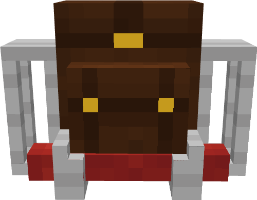
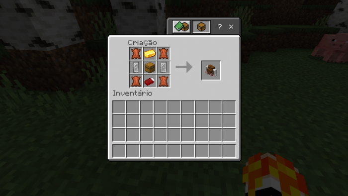
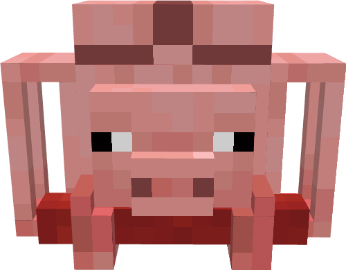
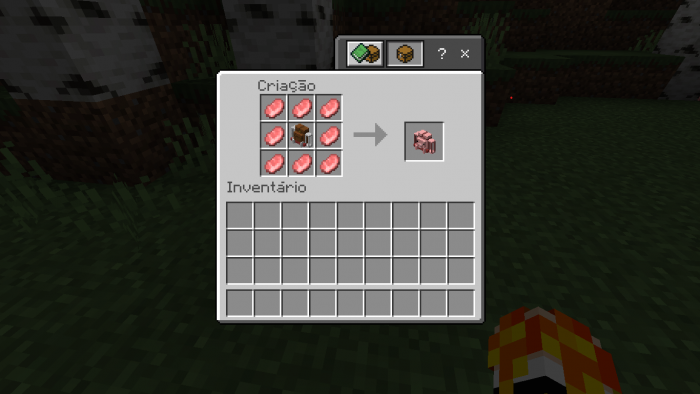
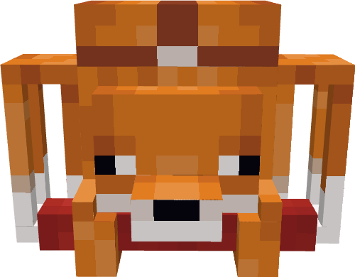
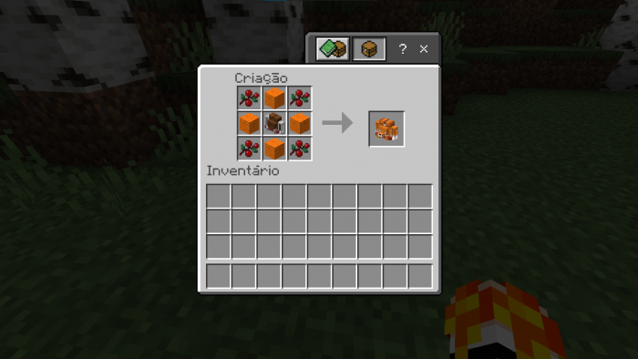
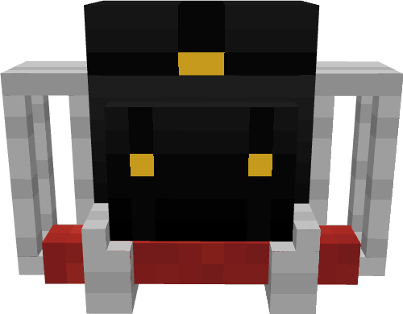
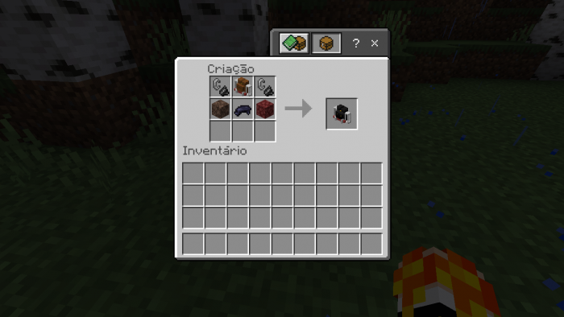
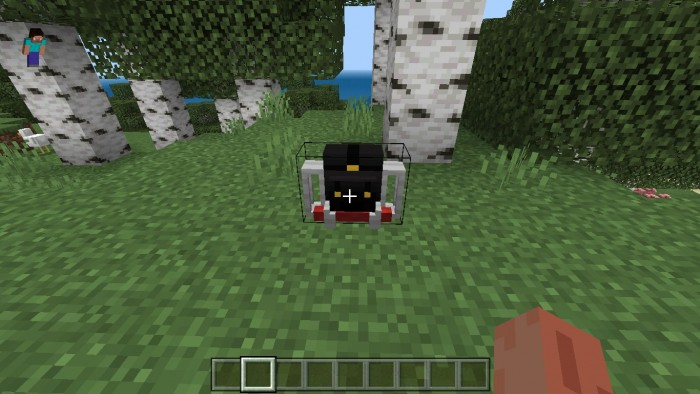

Traveller's Backpack
Add-on for the official Minecraft Pocket Edition
Minecraft PE 1.18 Minecraft PE 1.19 Latest
In need of more inventory space? Backpacks from this add-on will help you enjoy your great adventures in Minecraft.
This add-on has 4 various types of backpacks all designed in various and unique visual style.
Backpacks add more space into your inventory. So you can walk longer and take comfortable night stays in Minecraft's wild.
As usually, install all required files into Minecraft and then follow carefully the instruction to get backpacks for your Minecraft.
Credits
- Andriel Games
Current version
1.0.2
What is a Mod or an Add-on?
An add-on for Minecraft is a special set of files. Typically this set contains two files: a behaviour pack and a resource pack.
Once loaded in Minecraft and applied according to guides and instructions, those files provide various new game features. It is common that such add-ons provide new items, new skins and textures, new mini-games available inside the Minecraft world.
Some add-ons comes bundled into a single file called .mcaddon. Add-ons of these type provide the same features as ones coming in resource pack and behaviour packs separated. It is up to add-on's author how to bundle and distribute his creations.
Exact content of the Minecraft add-ons is controlled by the author of the add-on.
Files has been packaged into an add-on are interpreted by the Minecraft engine. They work the same way as any other features in the Minecraft game itself. They can't make any harm to the user's device or damage user's files, because most of them are not executable on any OS except the Minecraft itself.
A process of creating such add-ons called modding. Likewise modding a car or modding a smartphone, modding makes the game more personalized. For example, there are some add-ons enhancing an in-game graphics or changing how mobs behave in game.
This page is dedicated to add-ons those enable various guns in Minecraft. Minecraft players can enjoy shooting and war games in Minecraft worlds by applying this add-ons in Minecraft and enable them for their worlds.
Get started
Once you downloaded all corresponding files it's time to get your hands dirty (ofc for the great good!). Follow the steps below to get add-on work in the Minecraft.
- First, open every file using the system "Open in..." dialog in the Minecraft Pocket Edition.
- Next, create a new world. Please notice that all experimental gameplay features should be enabled.
- Choose behaviour packs and resource pack installed from the pane on the left side.
- Start the newly created world.
- You have to open a console in the game to type-in various commands to enable add-on items and get them in game.
Follow the detailed guide below to enable backpack for your player in Minecraft.
What backpacks are there?
There is basically 4 backpacks. Every backpack has a limit of how many backpacks one may craft in your world.
Standard model, pig-styled and fox-styled has a limit of 20 backpacks. And only 3 Andriel's backpack could be crafted in a world.
Andriel backpack took its name from the name of creator of this mod. Thank you, Andriel!
Let's craft some backpacks!
You would need some recipes to craft backpacks from this mod. We will narrow down all things below.
You will need very basic resources to craft them. Once you get stuck just return back to this guide.
Make it first: Create the new world with enabled behaviours and resources.
Standard model
If you like very common backpacks out there, this model is quiet durable and looks great for hiking. You wouldn't get confused if it gets dirty after exploring and sight-seeing.
You can craft up to 20 backpacks of this type.

Standard model: Recipe

As seen on the picture, you will need 4 bears scalps, 1 golden boullion, bed, 2 glass windows.
Pig model
This backpack mimics the pig head. While the design of this backpack looks quiet funny, Pig model is a serious product. It is durable and magnifies the skin of the player. Also, you can use it to hide in forests.
You can craft up to 20 backpacks of this type.

Pig model: Recipe

As seen on the picture, you will need the standard backpack first.
Remember the only backpack that doesn't follow the 20 backpacks per map rule is the Andriel backpack, so you can easily have a bunch of 20 pig backpacks.
Fox model
Fox model looks pretty much like a Pig model, but it has a cute fox face on the back.
If you like this aesthetics, move on!
You can craft up to 20 backpacks with a cute Fox face.

Fox model: Recipe
As seen on the picture, you will need the standard backpack first. Also, you will need berries and those blocks you know.
You can easily craft 20 Fox model backpacks in your Minecraft world and take a pleasure of the enhanced storage in your inventory. Perfect accessorie for every traveller!

Andriel's model
This is a special backpack added as a bonus by the creator of this Minecraft add-on! When woren up it changes it's skin in a new way.
To put the backpack on your back, drop it into the hand of your player in inventory. You look great!
You can craft only 3 backpacks of this type.

Speical Backpack: Recipe
Craft the Standard backpack first and find resources for crafting this model.
You can craft 3 Andriel's backpacks in your Minecraft world. Have a nice trip around the Minecraft world!

How to use these backpacks?
To put them on your back, just take them into the hand in your inventory. No additional actions required.
In addition to carrying items these backpacks can be turned into a bed.

DISCLAIMER
IT IS NOT AN OFFICIAL MINECRAFT PRODUCT. NOT APPROVED BY OR ASSOCIATED WITH MOJANG.
The Minecraft name, the Minecraft brand, and Minecraft is the property of Mojang AB or a respected owner.
With respect to Mojang Brand Guidelines